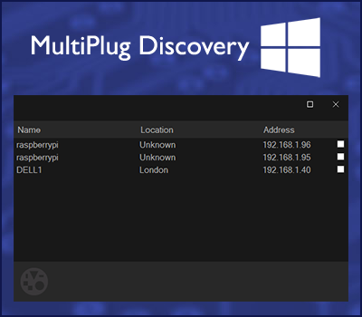

Windows MultiPlug Discovery App
An Windows MultiPlug discovery App is available which lists MultiPlug instances found on the current network and allows you to conveniently connect to the Web browser based user interface of any of the discovered instances.
Windows users can also use the My Network Places within Windows Explorer to discover MultiPlug instances.
Install